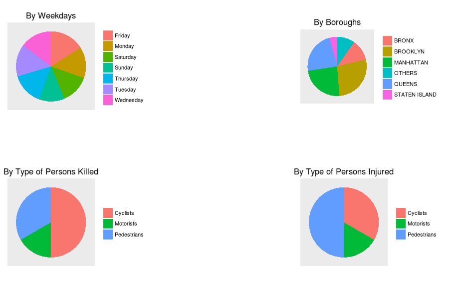

Sample project
This app visualizes the traffic incident map of New York City, summarizes and predicts trend for the coming year.
The traffic incident map can be customized using the sidebar panel to see incidents by date, time, number of persons
injured or killed, causes and type of vehicles.

The app is hosted here. GitHub repository
here.
The data is obtained from NYPD Motor Vehicle Collisions.